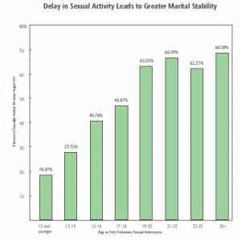
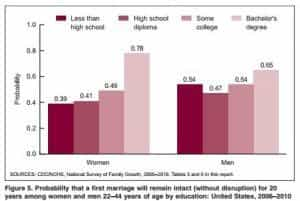

< < < Back
How To Reduce Your Risk Of Divorce – Return Of Kings
The neomasculinity movement is, in many ways, a reaction to the changing incentives for men. Divorce courts began to favor women who abandoned their vows, giving them cash and prizes for breaching their promises. Men were being thrown out of their own homes, cut off from their children, and forced to pay alimony to a woman who went back on her word (women initiate most divorces)..As a result, men are making the rational decision to avoid marriage in greater numbers.
Yet, there is a deep longing within us to be married. Call me a faggot, but I want to share my life with a woman. To have a helper, to raise children… to be loved.
Is this possible in a society that rewards female treachery? There is always a risk that you will be divorce-raped. Nothing is certain. But, it is possible to control this risk if you are very careful about the woman you trust.
Can You Cut Your Divorce Risk 80%?
For years, we have heard that half of all marriages end in divorce. This is number may be a bit high, but it’s clear that there is an epidemic of divorce today. But not all marriages are created equal. There are factors that strongly influence the likelihood for divorce.
Free Northerner has an excellent post discussing how vetting your potential wife can drastically reduce your risk of divorce:
“…I consider myself justified in estimating, that the type of women I plan on marrying would have a statistical likelihood of divorcing me around 10%.“
The post relies on data from several different sources, so it’s hard to amalgamate them. But his reasoning looks pretty sound; certainly you can substantially reduce your risk of divorce rate by avoiding certain red flags. You can read the Heritage Foundation research that formed the basis for the post here, CDC source material from 2002, and the CDC data from 2012.
Here are 10 risk factors to consider:
Factors In Divorce Risk
1. Number of Sexual Partners
Source: Heritage Foundation
This is the most important factor. Women who are virgins when they marry are far less likely to get divorced, and women with lots of partners are far more likely to divorce. This is probably related to an inability to pair-bond.
2. Age Of First Sexual Experience
Source: Heritage Foundation
This factor is also quite strong. Among non-virgins, those who delayed sex until the age of majority are somewhat less likely to be divorced. And those who had sex very young were much more likely to be divorced.
3. Race
There is no question that different cultures and races have different attitudes toward divorce, and that younger women tend to treat divorce differently than older women. Hispanics have a fairly flat risk of divorce by age; younger Hispanics are less likely to divorce than other races, older Hispanics more likely. Blacks are greater risks for divorce in general, but the difference is sharper as they age. White women in their 20s are the best bet for those looking to avoid divorce.
4. Religion
The CDC data makes it clear that women for whom religion is very important, or somewhat important, are somewhat less likely to divorce. Free Northerner makes the point that religious participation is more important than religious affiliation. Women who participate in their religion are 10-20% less likely to divorce.
I have previously written about the benefits of patriarchal religion for marriage and family life. One of the main benefits is having virtuous older women to encourage her to be a good, faithful wife. This helps counteract the cultural cesspool constantly encouraging women to abandon their families.
5. Education

Contrary to what I expected, women who complete a college education are significantly less likely to get divorced. Is this because women who complete college are smarter? Are they more likely to be wise, because they can complete tasks? Or is this a crossover effect? I’m not sure, but the data is clear: a completed bachelor’s degree means a big drop in risk.
6. Presence Of A Father
Like almost everything in life, women raised by both parents are much more likely to have successful marriages. This is probably because she at least has some role model and male authority in her life, and some exposure to the benefits of remaining committed to your vows.
7. Rape Victims
Women who have been raped (forced sexual intercourse) are 23 percentage points more likely to be divorced than those who have not.
8. Baby Mamas
Marrying your baby mama, whether the baby is already born or whether she is pregnant, correlates with increased divorce risk. Interestingly, not having children within marriage increases divorce risk somewhat, while having children within wedlock cuts divorce risk substantially. Is it possible women will be happier back in the kitchen?
9. Mental Illness
Women who were diagnosed with Generalized Anxiety Disorder were 16 percentage points more likely to divorce than those who were not. We can extrapolate and guess that women with mental illness generally would tend to be more likely to divorce.
10. Interracial Marriage
Those who marry a woman of a different race are at somewhat higher risk for divorce as the marriage goes on. I would like to see this broken down by the race of each partner, however. I suspect that certain couplings (black male, white female) are more likely to end in divorce than others (white male, Asian female).
Conclusion
All women are not created equal. There are still traditional, feminine, virtuous women out there. Your risk of divorce rape can be managed, but not eliminated, by weeding out undesirable traits. If you get married to a whore, you’re probably not going to end up happy. If you marry a a virtuous woman, your chances are much better.
Read More: The Path Men Took To Trump